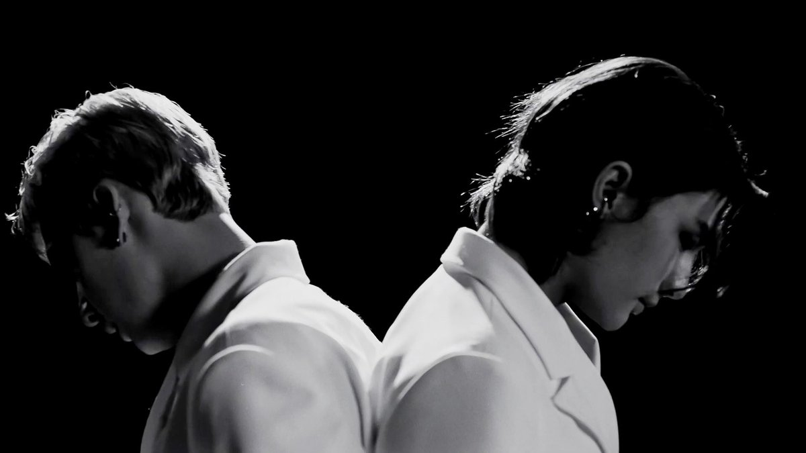
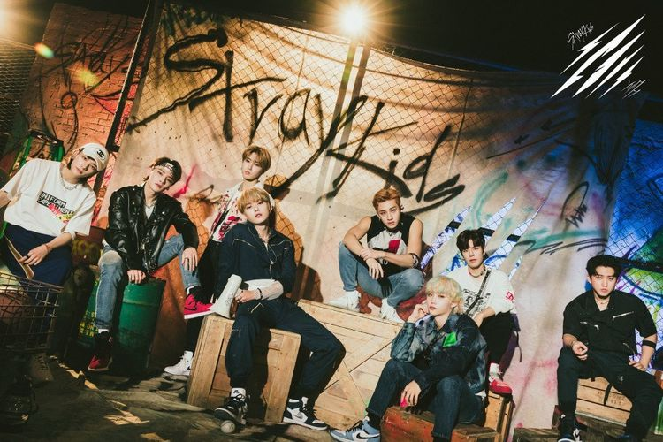

Cerita Stray Kids Sisipkan
Konsep Tradisional Korea
di lagu terbarunya
'Thunderous'
Han, Seungmin, dan IN
Stray Kids Nostalgia
Masa SMA Lewat lagu
'Gone Away'

Bangchan dan Hyunjin
Stray Kids tampil sexy
dalam lagu 'Red Light'
Lee Know, Felix, dan
Changbin Stray Kids
bersenang-senang di
Lagu 'Surfin'

Stray Kids Bakal
Menggebrak Music
Station di Jepang